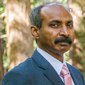

- Responsible for software engineering, quality assurance, and production support.
- Recognized for consistent success in developing systems, plans, and procedures to improve
processes, and enhance performance
- In charge of planning for releases and quality for all products and engines in P&R
- Hiring, training and managing a team of 20+ engineers with diverse experience across
geographies with focus on innovation, quality and deliverables
- Deep-dive problem solving, detailed analysis and debugging of quality of results for complete
design implementation flow. High proficiency in prototyping solutions by scripting
- Coordination of various engineering r&d to provide solutions and fixes to field teams.
Collaborating with architects, and engineers to ensure the QoR of release is same or better than
previously released version.
- Hands-on expertise in every phase of Physical design from RTL -> GDS
- Partner with R&D for Flow and methodology development to deliver superior out of the box QoR
from the tool with ease of use.
- Experience in coordinating and managing remote teams across multiple locations, e.g. teams of
20-25 people.
- Excellent understanding of QA processes, methodology and toolsets. Experience in defining and
setting up testing methodology for integration, functional and regression testing.
- Established and managed an offshore development and testing team which provided services
to multiple engineering organizations in the company.
- Designed and set up application monitoring systems to proactively alert proper staff of production
problems.
- Managed a comprehensive integrated change control process to limit code changes to released
versions.
- Created advanced web interface using CGI-PERL, PHP & MySQL to compare Quality of Results between
various builds. Extended existing test infrastructure to be 90% automated.
- FCS of Nitro/Olympus releases on time and as planned – one every 2 months.
- Designed and wrote test infrastructure & cgi-perl scripts for deployment at customer sites to
test pre-release software
Synopsys Inc.
- 6-months as a Data Scientist in Design Dash analytics tool. Created custom workflow in Python
- Data Scientist in Design Dash analytics tool. Created and integrated custom workflows in Python.
- As part of professional development completed certification courses in Deep Learning Neural Networks
(from DeepLearning.ai), Machine Learning (from Stanford and Univ of Washington) and Data Sciences.
( from John Hopkins University). Experience working with modern Deep Learning software architectures
and frameworks Use Google Colab and Kaggle. Complete with community on Kaggle platform.
- Worked on various Convolutional Neural Net architectures (building and transfer learning),
Sequence models
- Excellent time-management skills, and multiple initiatives prioritization for individuals and teams.
Mentor Graphics Inc.
- Joined P&R Sierra a startup after Mentor Graphics acquisition. Hired, coached and managed a
team of 20+ engineers across geographies with focus on innovation, quality, and deliverables.
- Full stack web application development for monitoring and signoff of releases using PERL, CGI,
PHP & MySQL to compare Quality of Results between various builds. Using raw data from test runs,
created tables to store processed data, and presented using web interface. Implemented similar
structure at customer sites to qualify pre-releases software.
- Established proof of concept use model in Polarion ALM – SAFe 4.3.0, for Business Unit. Created
widgets using velocity scripting language, created a release with work-items, tracked deliverables using
time-spent and story points, generated reports and Teams pages.
- Hired, coached and managed a team of 20+ engineers with diverse experience across geographies with
focus on innovation, quality, and deliverables.
- Summary: Joined as Product Validation Manager and promoted to Architect Product Validation based
on strong team leadership performances and for consistent success in developing systems, plans, and
procedures to streamline operations, improve processes, and enhance product quality & performance.
- Managed a team of 20+ engineers with diverse experience across geographies (overseas and local)
with focus on innovation, quality and deliverables. Shipped multiple releases for all products and
engines in P&R. FCS of P&R releases on time and as planned – once every 2 months.
- Responsible for software engineering, quality assurance, and production support.
- Recognized for consistent success in developing systems, plans, and procedures to improve processes,
and enhance performance
- In charge of planning for releases and quality for all products and engines in P&R
- Hiring, training and managing a team of 20+ engineers with diverse experience across geographies
with focus on innovation, quality and deliverables
- Deep-dive problem solving, detailed analysis and debugging of quality of results for complete
design implementation flow. High proficiency in prototyping solutions by scripting
- Coordination of various engineering r&d to provide solutions and fixes to field teams. Collaborating
with architects, and engineers to ensure the QoR of release is same or better than previously released version.
- Hands-on expertise in every phase of Physical design from RTL -> GDS
- Partner with R&D for Flow and methodology development to deliver superior out of the box QoR from
the tool with ease of use.
- Experience in coordinating and managing remote teams across multiple locations, e.g. teams of
20-25 people. Excellent understanding of QA processes, methodology and toolsets. Experience in defining
and setting up testing methodology for integration, functional and regression testing.
- Established and managed an offshore development and testing team which provided services to
multiple engineering organizations in the company.
- Designed and set up application monitoring systems to proactively alert proper staff of production problems.
- Managed a comprehensive integrated change control process to limit code changes to released versions.
- Created advanced web interface using CGI-PERL, PHP & MySQL to compare Quality of Results between
various builds. Extended existing test infrastructure to be 90% automated.
- FCS of Nitro/Olympus releases on time and as planned – one every 2 months.
- Designed and wrote test infrastructure & cgi-perl scripts for deployment at customer sites to test
pre-release software
BalzeDFm Inc.
A startup (early hire). Designed a QoR system, established test infra, quality processes & automation.
- Designed a QoR system in CGI-PERL, and web interfaces to setup standards and metrics to qualify
multiple major and hotfix releases.
- Established multiple quality improvement processes. Automated verification and consistency checks,
300+ QOR tests and 1000+ unit tests, in regression, and test infrastructure.
- Developed test plans for new functionality and created over 300+ QOR tests and 1000+ unit tests.
- Designed a QoR system to execute, and host results on web. Architecture used CGI-PERL,
Apache & Tcl interfaces, The system was designed to show trends and histories of results for various
releases and designs. This helped setup standards and metrics to qualify multiple major and hotfix
releases.
- Contributed to & supported numerous benchmarks at 65nm and 90nm that showed leakage savings
to Customers on tape-outs and taped out designs.
- Integrated Aprio’s test infrastructure into Blaze, added to standard QA nightly suites.
- Created Perl/Tcl scripts for automated verification and consistence checks in regression
- Identified weak areas and developed release gating plans to strengthen test suite
- Compiled, wrote major portion of first User Manual for BlazeMO software
- Responsible for release and quality of Blaze product. Developed Demos for DAC and Training
material for Customers.
- Worked on Synopsys PrimeTime in Blaze MultiMode Repair runs.
Cadence Design Systems Inc.
- Worked in Ambit-DA after Cadence acquisition. Created flow level tests in Static Timing features,
Synthesis, P&R. Partnered with AEs, Sales, R&D, and PM to improve product quality & adoptability
- Created flow level tests in Static Timing features, Synthesis, Place and Route. Partnered with
AEs, Sales, R&D, and Program Management, to train new hires in Static Timing Analysis.
- Partnered with AEs, Sales, R&D, and Program Management to plan and develop Product Requirement specs.
Created flow tests, and conducted training sessions for new Static Timing features and Synthesis,
Place and Route flows for various releases - BGPKS, SOCE, RTLE, and CTE
- Worked on PCRs – Product Change Requests – filed by Customers, and AEs
- Worked on Prototyping, Partitioning and Budgeting flows using First Encounter and BGPKS
- Wrote examples and explained various STA commands as internal app-notes to be used by AEs during
their STA analysis, and later to be documented in the STA user guide
- Wrote Tcl/Shell scripts to loosely integrate various Cadence tools in the BGPKS/SOCE flow
- Excellent understanding of various library – Liberty, TLF, etc. – and parasitics format
- Product and Customer support engineer for BuildGates STA, and Distributed Synthesis product
- Created a basic STA training for AEs who are new to Timing
- Partnered with PE to integrate flow tests into regression
- Develop nearly 1500 tests for new Timing features in Godzilla release
- Supported Distributed part of BuildGates and PKS regression runs testing, and fixing
- Working closely with PM on the new release model for Ambit to meet all release mile-stones
within the sign-off dates
- Provided technical support to cross-functional PV teams during installation and setup of
BG/PKS in their design flows Conducted training sessions for PV on Cadence installation process
- Project lead for the training, scheduling, testing and sign-off of Assura
- Conducted XRunner training class. Automated UI test cases using XRunner
- Lead a cross-functional team that documented Openbook testing efforts of Pubs & PV
- Participated in V&V cross-functional teams that includes reviewing plans and initiatives
- Evaluated JavaStar, a new automation tool from SunTest to develop tests GUI
- Special achievement award Nov 96, and Aug 96